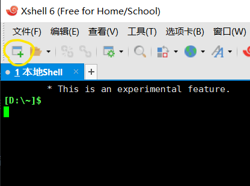
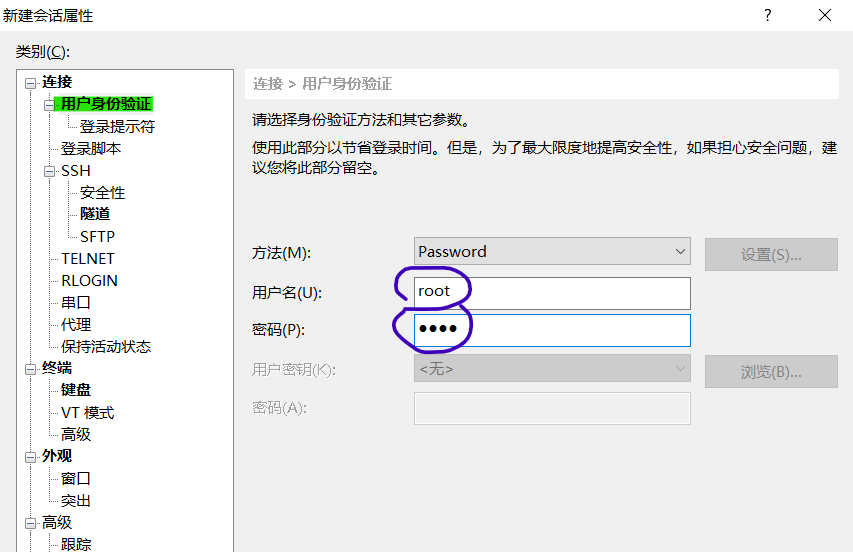

远程维护
| 广告：在此之前，你可能需要一台自己的远程服务器（每月 8 块多） |

远程软件
远程连接软件
常用的远程连接软件有 Xshell、SecureCRT、putty 等。
远程文件传输软件
常用的远程文件传输软件有 Xftp（一般与 Xshell 组合使用）、WinSCP 等。
下载上述软件
链接：https://pan.baidu.com/s/17_-Oi_bmAhD7zYufl_stYQ 提取码：vamj 复制这段内容后打开百度网盘手机App，操作更方便哦 |
远程登陆
通常我们使用 ssh 协议进行远程登陆服务器。Linux 上 sshd 为我们提供了远程登陆的能力，因此我们能够远程登录服务器，需要运行该守护进程。通常情况下 sshd 默认开机启动，并监听 22 端口。所以我们远程登陆时连接 22 端口，可以直接使用远程工具登陆服务器。
这里仅介绍 Xshell 这一种远程连接软件连接服务器的方式，其他软件大致相同。
使用 Xshell 远程登陆
【步骤一】：打开 Xshell，点击下图所示会话窗的新建按钮。

如果没有上图的会话框，也可以点击如下图所示的左上角的小窗。

【步骤二】：填写会话名称和主机地址

【步骤三】：点击左侧「用户身份验证」，填写用户名密码，然后点击下方的连接按钮。如果提示需要保存密钥，选择「接收并保存」。

使用命令远程登陆
除了使用远程连接软件登录，你也可以使用任意一款命令行软件登陆。只要你的电脑支持 ssh 命令。
语法
ssh [user@]host[:port]
# 或使用如下方式
ssh [user@]host [port]
解释
user为登陆用户名，一般为 root。host为登陆 IP，一般为公网可访问的 IP 地址。port为远程的端口，默认为 22，可以省略不写。如果远程端口设置为其他端口号，则需要填写该选项
不能远程连接服务器的情况
首先确认远程的 IP、用户名、密码等是否正确。
查看服务器是否启用 sshd 守护进程。
systemctl status sshd # centos 6 请使用 service 命令
如果 sshd 守护进程未启动，使用如下命令启动；否则跳过此步骤。
systemctl start sshd
如仍不能连接，使用如下命令查看是否启动 22 端口：
firewall-cmd --list-ports
如未启用，使用如下命令开放 22 端口：
firewall-cmd --zone=public --add-port=22/tcp --permanent
firewall-cmd --reload # 或 service firewall-cmd restart
远程文件传输
除了使用远程文件传输软件，也可以使用一些远程文件传输的命令行工具进行文件传输。比如 lrzsz、scp。
lrzsz 工具
如果你使用的是 xshell 或 SecureCRT 等支持 zmodem/xmodem/ymodem 的远程工具，可以使用 rz、sz 命令进行文件传输，非常方便。你甚至可以通过拖动文件到命令行的方式发送文件到远程服务器。但使用 rz、sz 前需要先安装 lrzsz。
安装
查看是否安装 lrzsz，显示如下所示则表示已安装
> yum list installed | grep lrzsz
lrzsz.x86_64 0.12.20-36.el7 @os
# 或使用如下命令，最后的 os 前有 @ 表示已安装，否则未安装
> yum list lrzsz
lrzsz.x86_64 0.12.20-36.el7 @os
安装 lrzsz
yum -y install lrzsz
使用
使用远程服务器发送文件到本机： sz filename
使用远程服务器接收本机文件： rz 或拖动文件到命令行
sftp 命令
使用 sftp 连接远程服务器
sftp [user@]host [port]
连接成功显示如下：
sftp:/root>
上传文件到远程服务器
sftp:/root> put <本地文件路径> <远程服务器路径>
从远程服务器下载文件
sftp:/root> get <远程服务器文件路径> <本地路径>
其他命令
在连接 sftp 后，还可以使用如下几个命令。
cd切换远程工作目录lcd切换本地工作目录ls列出远程目录下的内容lls列出本地目录的内容pwd打印远程工作目录lpwd打印本地工作目录- 以及
mkdir、mv、rename、rm、rmdir等
显示帮助
sftp:/root> help